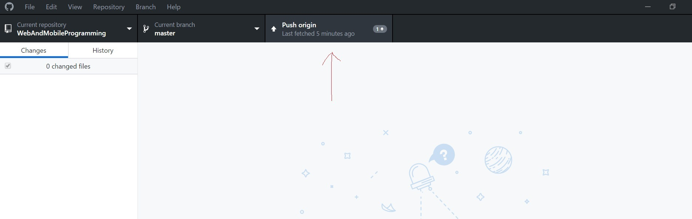

Your repository has been created!!!


create a html document index.html and place it in sourceFolder

Sync local repository folders with the remote repository

Push origin after commiting
Click here to watch tutorial on How to create GitHub repository and commit changes Go To YouTube Video